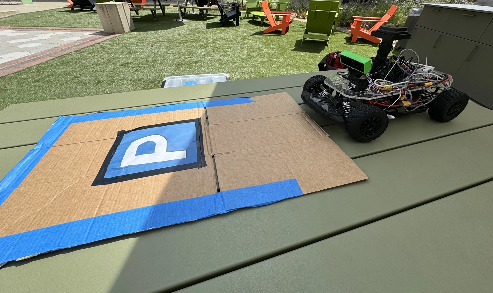
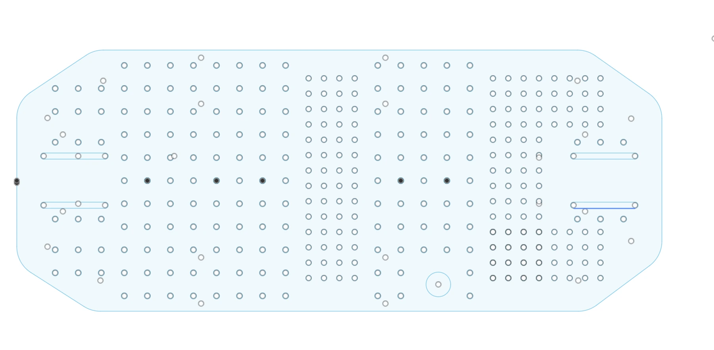
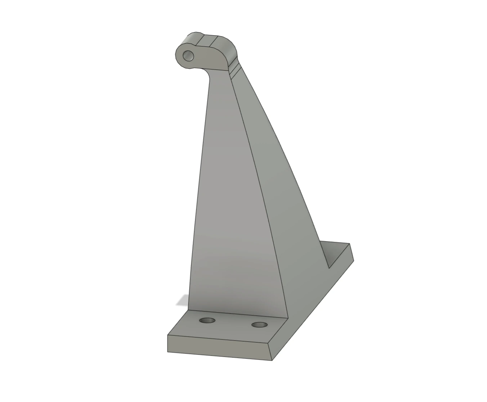
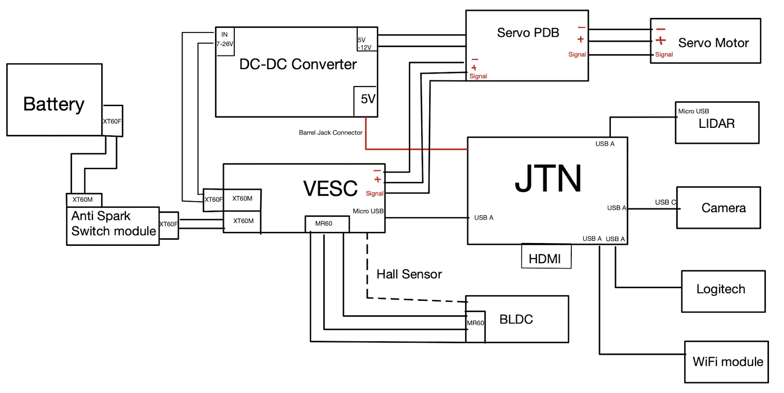

Vehicle systems / Mechatronics
Autonomous Parking Vehicle
Bring mechanical hardware, perception and control together.
Camera hardware integration, vision data collection and model training for a small autonomous-parking vehicle.
- Context
- UC San Diego · MAE 148 · Team 5
- Period
- Winter 2024
- My contribution
- Camera hardware programming, setup & assembly; vision data collection & model training
Evaluation at a glance
The team ran parking-cue recognition and calibrated lane following separately. End-to-end testing exposed a failed handoff, with shared camera access identified as a likely cause.
Introduction
Explore automated parking on a physical platform.
Automated parking aims to reduce driver workload, but it requires sensing and motion control to work together. Team 5 used a small vehicle to investigate parking-sign and parking-line recognition and the transition into a parking maneuver.
On the four-person team, Zongyu handled camera-related hardware programming, setup and assembly, and contributed to computer-vision data collection and model training. The objective was to connect parking-cue detection to the vehicle’s motion-control workflow.

Design & methods
Give the sensing and control hardware a stable platform.
The team mounted its camera and Jetson-based computer on a vehicle with a custom baseboard and camera stand. Camera setup, hardware programming and physical assembly established the sensing platform needed to collect visual data.
Computer-vision data collection and model training supported recognition of parking signs and lines. The team connected the recognition model to a Robot Operating System (ROS) node and calibrated an existing lane-following routine. The electrical diagram shows how computing, sensors and drive hardware share the vehicle’s power system.



Evaluation
Test the handoff between perception and motion.
The team trained a parking-space model, ran the recognition node and calibrated the lane-following routine. Integration testing revealed a failure to start lane following after recognition, with shared camera access identified as a likely cause.
Recognition also depended on the starting distance from the parking cues. These observations narrowed the next development tasks to camera-resource coordination and more consistent perception across starting positions.
Conclusion
A working subsystem is only one part of autonomy.
The project produced the vehicle and key perception/control components. Its main integration lesson is that reliable behavior requires explicit handoffs between subsystems. A repeatable end-to-end parking sequence is the next system-level test.
Image credits & project sources
Vehicle, circuit and CAD images: UC San Diego MAE 148, Winter 2024, Team 5.